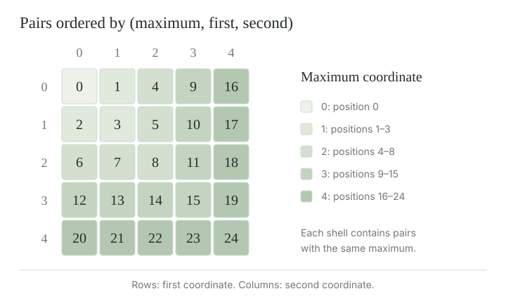

Cardinality records size up to bijection. For \(\kappa=|A|\) and \(\lambda=|B|\), define
Here \(A\sqcup B=(\{0\}\times A)\cup(\{1\}\times B)\) is a disjoint union, and \(A^B\) is the set of functions from \(B\) to \(A\). The exponent gives the size of the domain, and the base gives the size of the possible values.
These definitions do not require choice. For the results about arbitrary infinite sets in this entry, we assume the axiom of choice, using its equivalent well-ordering principle. This makes all sizes comparable and lets us represent them by ordinals. Unlike ordinal arithmetic, cardinal arithmetic ignores how the elements are ordered.
Bijections \(u:A\to A'\) and \(v:B\to B'\) induce bijections on the disjoint unions, products, and function sets.
Proof
On the union, keep the tag and apply \(u\) or \(v\) in the corresponding part. On products use \((a,b)\mapsto(u(a),v(b))\). On function sets use \(f\mapsto u\circ f\circ v^{-1}\), whose inverse sends \(g\) to \(u^{-1}\circ g\circ v\). Thus the three resulting cardinalities are independent of the representatives. □
Cardinal addition and multiplication are commutative and associative, and multiplication distributes over addition:
Proof
Swap the tags of a disjoint union or the coordinates of a product for commutativity. Recode three tagged parts by a single three-valued tag for associative addition, and use \(((a,b),c)\mapsto(a,(b,c))\) for associative multiplication. For distributivity, a pair in \(A\times(B\sqcup C)\) has its second coordinate in exactly one tagged part; move that tag outside the pair to obtain a point of \((A\times B)\sqcup(A\times C)\). Each rule is a bijection with the indicated reverse rule. □
Also \(\kappa+0=\kappa\), \(\kappa\cdot0=0\), and \(\kappa\cdot1=\kappa\). No choice assumption is needed for these explicit bijections.
For every cardinal \(\kappa\), \(\kappa^0=1\), including \(0^0=1\). Also \(1^\lambda=1\), \(\kappa^1=\kappa\), and \(0^\lambda=0\) when \(\lambda>0\).
Proof
There is exactly one empty function from an empty domain to any set. A function into a singleton has its value forced everywhere; a function from a singleton is determined by its one value. There is no function from a nonempty domain to the empty set. These observations count the relevant function sets. □
Well-order a set \(A\), and let \(\alpha\) be its ordinal type. Among the ordinals at most \(\alpha\) that are bijective with \(A\), choose the least, \(\kappa\). It is an initial ordinal: no smaller ordinal has its size. We identify the cardinal \(|A|\) with this ordinal representative.
Every smaller ordinal \(\beta<\kappa\) has strictly smaller cardinality: it injects into \(\kappa\) by inclusion, but cannot be bijective with it. Cardinal representatives are unique. Indeed, if two had the same size, ordinal comparison would make the larger one noninitial unless they were equal.
Their ordinal comparison agrees with comparison by injections. If \(\kappa\le\lambda\), inclusion is an injection. If \(\kappa\) injected into \(\lambda<\kappa\), the reverse inclusion and Cantor–Schröder–Bernstein would contradict initiality. Thus cardinals are comparable under choice. The least infinite cardinal is \(\aleph_0=|\mathbb N|\), represented by \(\omega\).
Every infinite initial ordinal \(\kappa\) is a limit ordinal. Consequently, \(\gamma<\kappa\) implies \(\gamma+1<\kappa\).
Proof
If \(\kappa=\alpha+1\) were infinite, \(\alpha\) would be infinite and would contain all finite ordinals. A bijection from \(\alpha+1\) to \(\alpha\) sends the new last point \(\alpha\) to \(0\), each finite ordinal \(n\) to \(n+1\), and every other point to itself. This contradicts initiality. Since \(\kappa\ne0\) and is not a successor, it is a limit. Apply the characterization of limits for the final assertion. □
For an ordinal \(\kappa\), order the pairs \((\xi,\eta)\in\kappa\times\kappa\) by the lexicographic keys
Compare the first key coordinate where they differ. This is a well-order: in a nonempty set of pairs, first choose the least occurring maximum, then the least first coordinate among those pairs, and then the least second coordinate among the remaining pairs. This determines a least pair without invoking choice.
If \(m=\max\{\xi,\eta\}\), all predecessors of \((\xi,\eta)\) belong to \((m+1)\times(m+1)\). The small predecessor sets are the key to counting the whole square.

Under AC, \(|A\times A|=|A|\) for every infinite set \(A\).
Proof
It suffices to prove \(|\kappa\times\kappa|=\kappa\) for infinite initial ordinals. Suppose there is a counterexample, and take the least counterexample \(\kappa\); it can be chosen among the initial ordinals at most any one counterexample. The case \(\omega\) holds by the enumeration of natural-number pairs.
Use the well-order in . For a pair with maximum coordinate \(m\), its predecessor set is contained in \((m+1)\times(m+1)\). We have \(m+1<\kappa\). Put \(\lambda=|m+1|<\kappa\). If \(\lambda\) is finite, its square is finite and hence smaller than \(\kappa\). If \(\lambda\) is infinite, minimality of \(\kappa\) gives \(\lambda^2=\lambda<\kappa\). In either case the predecessor set has cardinality strictly below \(\kappa\).
Let \(\rho(\xi,\eta)\) be the ordinal type of that predecessor set. It must be less than \(\kappa\): otherwise inclusion of \(\kappa\) into that ordinal, followed by an order isomorphism, would inject \(\kappa\) into a set of smaller cardinality. Distinct positions of a well-order have distinct predecessor types, so \(\rho\) is an injection \(\kappa\times\kappa\to\kappa\). The map \(\xi\mapsto(\xi,\xi)\) injects in the other direction. Cantor–Schröder–Bernstein contradicts the assumed failure. Finally, transport the resulting bijection along a bijection between \(A\) and its cardinal representative. □
Choice enters when well-ordering an arbitrary \(A\). The argument for a set already known to be well-orderable does not require that extra assumption.
If \(\nu=\max\{\kappa,\lambda\}\) is infinite, then \(\kappa+\lambda=\nu\). If in addition both factors are nonzero, then \(\kappa\lambda=\nu\). A product with a zero factor is zero.
Proof
Each summand injects into \(\nu\), so their tagged union injects into \(\nu\times\{0,1\}\), which injects into \(\nu^2\). Its size is \(\nu\) by . The larger summand injects into the union, giving the reverse bound.
The product injects into \(\nu^2\). If both factors are nonempty, fix one point in the smaller factor to inject the larger factor into the product. Cantor–Schröder–Bernstein gives equality in both cases. If a factor is empty, the product has no pairs. □
Compare \(\aleph_0+3\), \(\aleph_0\cdot3\), \(\aleph_0\cdot0\), and the square of a finite set.
The first two are \(\aleph_0\); the zero product is zero. For a finite set of size \(n\), the square has size \(n^2\), equal to \(n\) only for \(n=0\) or \(n=1\). Infinitude and the nonzero-factor condition are essential. These expressions concern cardinal sizes; the ordinal \(\omega+3\) is larger than \(\omega\) as an order type.
For infinite \(\kappa\) and each positive natural number \(n\), \(\kappa^n=\kappa\). In contrast, \(\kappa^0=1\).
Proof
One coordinate gives \(\kappa\). A function on \(n+1\) positions consists of a function on the first \(n\) positions and one further value, giving a bijection with \(A^n\times A\). Induction and the square theorem prove the result. The empty-domain case was established in . □
Under AC, if every \(A_n\), for \(n\in\mathbb N\), is countable, then \(\bigcup_n A_n\) is countable.
Proof
For each \(n\), the set of injections \(A_n\to\mathbb N\) is nonempty, including when \(A_n\) is empty. Use choice to select these encodings simultaneously, obtaining \(e_n\). For each \(x\) in the union, let \(n(x)\) be the least index with \(x\in A_{n(x)}\). Then \(x\mapsto(n(x),e_{n(x)}(x))\) injects the union into \(\mathbb N^2\): equal pairs give the same index and, by injectivity of that encoding, the same element. The pairing enumeration makes the target countable. □
The simultaneous selection of encodings is the use of choice here. This extends the result for finite unions.
Cardinal powers obey
Proof
A function on \(B\sqcup C\) is exactly a pair of functions, one on each part. A function \(C\to A\times B\) is exactly a pair consisting of its two coordinate functions. Finally, a function \(F:C\to A^B\) corresponds to the function \(g:B\times C\to A\) given by \(g(b,c)=F(c)(b)\); the inverse assigns \(c\) the function \(b\mapsto g(b,c)\). These are bijections even when sets are empty. □
For every set \(A\), \(|\mathcal P(A)|=2^{|A|}\).
Proof
Send a subset \(S\) to its characteristic function \(\chi_S:A\to\{0,1\}\), which is one on \(S\) and zero elsewhere. The inverse sends a binary-valued function to the preimage of \(\{1\}\). These rules are mutually inverse, including for empty \(A\). This extends the identification of subsets of the naturals with binary sequences. □
The continuum is the cardinal \(\mathfrak c=|\mathbb R|\). It satisfies \(\mathfrak c=2^{\aleph_0}\).
Proof
Fix a listing \((q_n)\) of all rationals. Map a real \(x\) to \(\{n:q_n<x\}\). This is an injection into \(\mathcal P(\mathbb N)\): if \(x<y\), a rational strictly between them belongs to the cut for \(y\) but not that for \(x\). To see the required density, choose a positive integer \(n\) with \(n(y-x)>1\) and put \(m=\lfloor nx\rfloor+1\); then \(x<m/n<y\).
In the other direction, for \(S\subseteq\mathbb N\), set
The geometric bound shows convergence to a real in \([0,1]\). If \(S,T\) first differ at \(k\), their contributions at that position differ by \(2/3^{k+1}\), whereas the absolute difference of all later contributions is at most
Thus \(x_S\ne x_T\). This gives an injection \(\mathcal P(\mathbb N)\to\mathbb R\); the separation estimate avoids ambiguity of positional expansions. Cantor–Schröder–Bernstein now gives \(|\mathbb R|=|\mathcal P(\mathbb N)|=2^{\aleph_0}\). □
This proof uses the basic real-number facts that natural numbers are unbounded and bounded monotone sequences converge. The explicit two injections do not require AC.
Is \(|\mathbb R^{\mathbb N}|\) larger than \(|\mathbb R|\)?
They have the same size. By the power laws and \(\aleph_0\cdot\aleph_0=\aleph_0\),
Regrouping countably many binary sequences into one binary sequence explains the calculation. The exponent here is countable; taking all subsets of \(\mathbb R\) gives a different result.
For every cardinal \(\kappa\), \(\kappa<2^\kappa\). In particular, \(\aleph_0<\mathfrak c<2^{\mathfrak c}\).
Proof
Cantor’s theorem gives an injection from \(A\) into \(\mathcal P(A)\) and rules out a surjection \(A\to\mathcal P(A)\), hence rules out a bijection. Together with \(|\mathcal P(A)|=2^{|A|}\), this is the strict inequality. Apply it first to \(\mathbb N\) and then to \(\mathbb R\). □
Thus finite sums and products of infinite sizes can collapse to the larger size, but taking every subset never does. Being uncountable does not make all such collections equally large.
Under the axiom of choice, there is a least uncountable cardinal, denoted \(\aleph_1\), represented by the first uncountable ordinal \(\omega_1\). It is the least cardinal strictly greater than \(\aleph_0\), so every uncountable set has cardinality at least \(\aleph_1\).
Since the real numbers are uncountable, gives
The continuum hypothesis is the assertion that equality holds:
It asks whether the real numbers already have the smallest uncountable size. Cantor’s theorem establishes that their size exceeds that of the natural numbers; the continuum hypothesis asks how far beyond it lies.